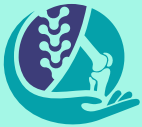

<mat-toolbar class="mat-elevation-z2" fxLayoutGap="50px">
    <mat-toolbar-row fxLayout="row" fxLayout.xs="column" fxLayoutAlign="space-between center">
    
      <div class="left-end" fxLayoutGap="50px">
    <button mat-icon-button>
        <span></span>
        <span class="logo">CT General Hospital</span></button>
  </div>
   
   
  <div class="right-end" fxLayoutGap="80px" style="margin-right:50px">
    
    <button mat-raised-button (click)="backTologin()">
        <mat-icon style="color:rgba(3, 161, 170,1)">login</mat-icon>Login
    </button>
    <button mat-raised-button><mat-icon style="color:rgba(3, 161, 170,1)">contacts</mat-icon>About Us</button>
  </div>
  </mat-toolbar-row>
  </mat-toolbar>
